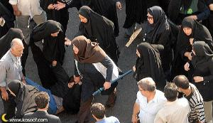

دختری زیر دستان سنگین ماموران روی زمین کشیده می شد. چهره اش پیدا نبود. نمی دانم چقدر به صفحه مونیتور زل زدم تا صورتش را از میان دست ها پیدا کنم. دلم ریش ریش شده بود از دیدن آن عکس و عصبیتی تمام وجودم را فراگرفته بود.

روزها برای یافتن مطالبی در باره تجمع آن روز، تمام سایت ها را زیر و رو می کردم و انگار این من بودم که زیر و رو می شدم با خواندن های پی در پی از بی حقوقیم در قوانین این کشور. انگار زن بودن برایم مفهومی تازه شده بود.
با وجود همه خشونت آن روز پلیس، چقدر حسرت مانده بود برایم از سهیم نبودن در آن اعتراض...
حالا از نوشته های این روزهای بچه ها می فهمم که دلارام برای تحصیل به خارج از کشور رفته بود اما دردهای کودکان و زنان این سرزمین تاب ماندن را از او گرفت. قاضی باید هم نداند که او چرا به ایران برگشت. باید هم بپرسد چرا؟ وقتی که حکم 34 ماه زندان بالای سر او بود.
آقای قاضی من به شما می گویم چرا. او قول شرف داده بود...
به دخترانی که در کودکی به اجبار پدر سر سفره عقد می نشینند.
به صغری که در 13 سالگی به اعدام محکوم شد و حالا سالهاست که پشت میله هاست.
به زنی که اشک می ریخت از دوری یک ساله از فرزندش که به اذن دادگاه به پدر سپرده شده بود.
به زنی که از ازدواج مجدد همسرش می گفت و دستانش موقع امضا کردن بیانیه می لرزید.
به زنی که از ترس آسیب شوهر معتادش به خود و دختر کوچکش از خانه فرار کرده بود و جایی را نداشت که برود...
به زنان و کودکانی که زندگیشان تحت این قوانین تبعیض آمیز به بن بست می رسد، که تنهایشان نگذارد، که همدلشان باشد و گوش شنوای دردهایشان...
روزی که حکم دلارام را شنیدم فکرم از کار افتاده بود. شوکه شده بودم از این همه بی عدالتی که ما را فراگرفته است. تنها چیزی که در ذهنم آمد این بود که نباید به خاطر این حکم تلاشمان برای برابری را متوقف کنیم.
بیانیه ها را در کیفم گذاشتم، از خانه بیرون رفتم و شروع کردم به امضا جمع کردن. آن روز عمیق ترین امضا هایم را گرفتم. برگه هایم از امضا پر شده بود و دستانم از دعاهای مردم برای برابری.
آن روز از قوانین گفتم و از نابرابری ها، از احکام ناعادلانه حکومت. از دلارام گفتم و از حکم غیر منصفانه ای که برای او صادر شده. گاهی بغض راه گلویم را می بست.
گاهی اشک در چشمانم می آمد و گاه اشک را در چشمان زنان می دیدم که با من آرزو می کردند که دلارام بماند. او نباید به زندان برود. نباید برود